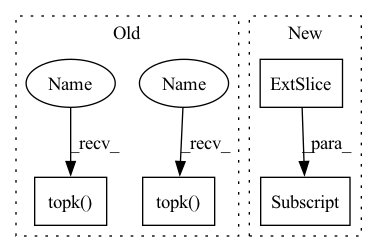

Pattern ID :8997

Before Change
ious_in_boxes_matrix = pair_wise_ious
n_candidate_k = min(10, ious_in_boxes_matrix.size(1))
topk_ious, _ = torch.topk(ious_in_boxes_matrix, n_candidate_k, dim=1) // 得到每个gt的最大的前k个iou
dynamic_ks = torch.clamp(topk_ious.sum(1).int(), min=1) // 将最大iou相加取整得到k
for gt_idx in range(num_gt):
_, pos_idx = torch.topk( // If largest is False then the smallest k elements are returned.
cost[gt_idx], k=dynamic_ks[gt_idx].item(), largest=False
) // 返回k个最小cost的anchor的索引
matching_matrix[gt_idx][pos_idx] = 1.0
del topk_ious, dynamic_ks, pos_idx
After Change
n_candidate_k = min(10, ious_in_boxes_matrix.size(1))
// topk_ious, _ = torch.topk(ious_in_boxes_matrix, n_candidate_k, dim=1) // 得到每个gt的最大的前k个iou
sorted_ious, indices = ious_in_boxes_matrix.sort(descending=True)
topk_ious = sorted_ious[:, :n_candidate_k]
dynamic_ks = torch.clamp(topk_ious.sum(1).int(), min=1) // 将最大iou相加取整得到k
for gt_idx in range(num_gt):
_, pos_idx = cost[gt_idx].sort()
pos_idx = pos_idx[:dynamic_ks[gt_idx].item()]
In pattern: SUPERPATTERN
Frequency: 3
Non-data size: 4
Instances
Fragment ID: 32859591
Project Name: iywie/pl_yolo
Commit Name: 211e63326579feb3178978eb746b03f3cb72aceb
Time: 2022-02-01
Author: zhouyw96@outlook.com
File Name: models/heads/yolox/yolox_loss.py
M Class Name: AnonimousClass
N Class Name: AnonimousClass
M Method Name: dynamic_k_matching(5)
N Method Name: dynamic_k_matching(5)
M Parent Class:
N Parent Class:
M File Name: models/heads/yolox/yolox_loss.py
N File Name: models/heads/yolox/yolox_loss.py
M Start Line: 260
M End Line: 267
N Start Line: 260
N End Line: 268
'>
Before Change
ious_in_boxes_matrix = pair_wise_ious
n_candidate_k = min(10, ious_in_boxes_matrix.size(1))
topk_ious, _ = torch.topk(ious_in_boxes_matrix, n_candidate_k, dim=1) // 得到每个gt的最大的前k个iou
dynamic_ks = torch.clamp(topk_ious.sum(1).int(), min=1) // 将最大iou相加取整得到k
for gt_idx in range(num_gt):
_, pos_idx = torch.topk( // If largest is False then the smallest k elements are returned.
cost[gt_idx], k=dynamic_ks[gt_idx].item(), largest=False
) // 返回k个最小cost的anchor的索引
matching_matrix[gt_idx][pos_idx] = 1.0
del topk_ious, dynamic_ks, pos_idx
After Change
n_candidate_k = min(10, ious_in_boxes_matrix.size(1))
// topk_ious, _ = torch.topk(ious_in_boxes_matrix, n_candidate_k, dim=1) // 得到每个gt的最大的前k个iou
sorted_ious, indices = ious_in_boxes_matrix.sort(descending=True)
topk_ious = sorted_ious[:, :n_candidate_k]
dynamic_ks = torch.clamp(topk_ious.sum(1).int(), min=1) // 将最大iou相加取整得到k
for gt_idx in range(num_gt):
_, pos_idx = cost[gt_idx].sort()
pos_idx = pos_idx[:dynamic_ks[gt_idx].item()]
'>
Fragment ID: 32859601
Project Name: iywie/pl_yolo
Commit Name: 211e63326579feb3178978eb746b03f3cb72aceb
Time: 2022-02-01
Author: zhouyw96@outlook.com
File Name: models/heads/yolox/yolox_loss.py
M Class Name: AnonimousClass
N Class Name: AnonimousClass
M Method Name: dynamic_k_matching(5)
N Method Name: dynamic_k_matching(5)
M Parent Class:
N Parent Class:
M File Name: models/heads/yolox/yolox_loss.py
N File Name: models/heads/yolox/yolox_loss.py
M Start Line: 260
M End Line: 267
N Start Line: 260
N End Line: 268
'>
Before Change
x = x.bool().float() // x[x!=0] = 1
sims = pairwise_cosine_similarity(x)
selected = torch.cat([torch.topk(sims, k=k, largest=False).indices,
torch.topk(sims, k=k + 1).indices], dim=1)
row = torch.arange(x.size(0), device=x.device).repeat_interleave(selected.size(1))
col = selected.view(-1)
After Change
sims = pairwise_cosine_similarity(x)
indices_sorted = sims.argsort(1)
selected = torch.cat((indices_sorted[:, :k],
indices_sorted[:, - k - 1:]), dim=1)
row = torch.arange(x.size(0), device=x.device).repeat_interleave(
selected.size(1))
col = selected.view(-1)
'>
Fragment ID: 32859602
Project Name: edisonleeeee/greatx
Commit Name: bac015d8340c7716e8712f989114982bff39b4f8
Time: 2022-02-27
Author: cnljt@outlook.com
File Name: graphwar/functional/functions.py
M Class Name: AnonimousClass
N Class Name: AnonimousClass
M Method Name: attr_sim(2)
N Method Name: attr_sim(2)
M Parent Class:
N Parent Class:
M File Name: graphwar/functional/functions.py
N File Name: graphwar/functional/functions.py
M Start Line: 46
M End Line: 48
N Start Line: 46
N End Line: 49